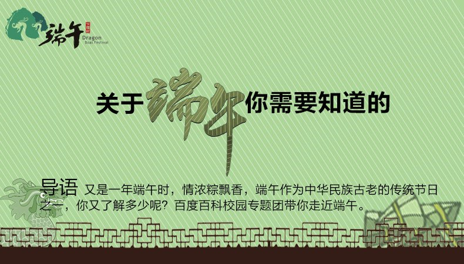

端午食粽，是节日习俗之一。粽，即“粽籺”，俗称“粽子”，属“籺”的其中一种。“籺”是逢年过节时用来拜神祭祖的贡品，籺有很多品种，不同的节日会做不同的籺，做籺拜神祭祖是古老习俗。粽籺的主要材料是稻米、馅料和箬叶（或柊叶）等。由于各地饮食习惯的不同，粽子形成了南北风味；从口味上分，粽子有咸粽和甜粽两大类。 [1-4]
端午食粽之风俗，千百年来在中国盛行不衰，已成了中华民族影响最大、覆盖面最广的民间饮食习俗之一，而且流传到朝鲜、日本及东南亚诸国。

端午食粽是我国流行范围很广的传统习俗。粽的主要材料是稻米、馅料和箬叶（或柊叶）等。包粽子所用的“植物叶子”，统称粽叶。粽子的传统形式为三角形，一般根据内瓤命名。粽子的种类，从口味上分，粽子有咸粽和甜粽两大类；从粽子馅上分，咸粽有肉粽、咸肉蛋黄粽、香菇粽、鲍鱼粽、莲子粽等，甜粽有水果粽、豆沙粽、枣子粽、香芋粽等；除了这些，还有一些地区的人爱吃碱水粽、白粽。北方粽子多是简单白米、赤豆、枣，蘸着白糖。而在南方，粽子口味丰富，鲜肉、鲜肉、火腿、蛤蒌、蛋黄、豆沙、排骨、蜜枣、莲蓉等，都能在粽子里变成可口的美味。形状多体现地域特色。